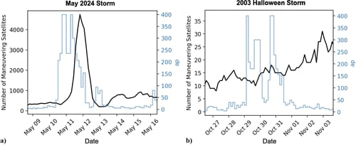

A geomagnetic storm is a temporary disturbance of Earth's magnetosphere caused by interactions between solar wind and Earth's magnetic field, usually triggered by solar flares or coronal mass ejections (CMEs). 1. Solar Events: The Sun ejects high-energy charged particles during events like solar flares and CMEs. 2. Travel to Earth: These particles reach Earth in 1-3 days, depending on their speed.
A geomagnetic storm is a temporary disturbance of Earth's magnetosphere caused by interactions between solar wind and Earth's magnetic field, usually triggered by solar flares or coronal mass ejections (CMEs). The 2003 Halloween storm and the May 2024 geomagnetic storm both reached G5 intensity, causing significant disruptions. The 2003 storm was driven by X-class solar flares, including an X28 flare, leading to satellite communication failures and a power outage in Sweden. Auroras were visible as far south as Texas. In contrast, the May 2024 storm resulted from an X9-class flare and was mitigated by advancements in forecasting and monitoring. Real-time data from satellites like DSCOVR allowed for early warnings, reducing the impact on infrastructure. While both storms were severe, the 2024 event benefited from improved resilience and preparedness.